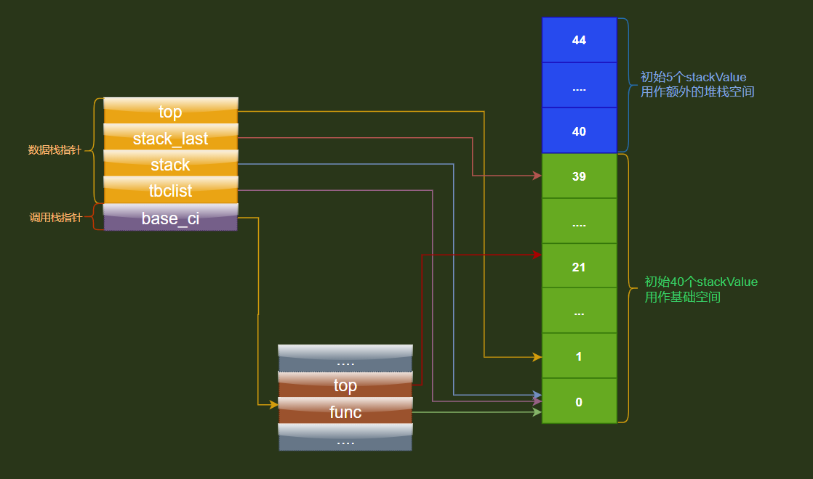

调用栈,数据栈
数据栈数据结构
/// @brief 数据栈指针结构
typedef union StackValue {
TValue val;
struct {
TValuefields;
unsigned short delta;//相邻 tbc 变量在栈中的距离
} tbclist;//此堆栈中所有活动的将要关闭的变量的列表
} StackValue;
//栈指针
typedef StackValue *StkId;
struct lua_State {
...
StkId top; /* first free slot in the stack *///指向栈的顶部，压入数据，都通过移动栈顶指针来实现
StkId stack_last; /* end of stack (last element + 1) *///最后可用的位置数据栈 正常的栈操作在[stack, stack_last]之间
StkId stack; /* stack base *///栈的起始地址
StkId tbclist; /* list of to-be-closed variables *///记录着最后一个tbc节点,栈缩容时会判断节点是否在缩容空间内,如果在那么就根据这个节点调用缩容空间内所有tbc变量的 __close() 元方法
};
//数据栈大小
#define stacksize(th) cast_int((th)->stack_last - (th)->stack)
调用栈数据结构

调用栈,数据栈初始化
这两个栈的初始化通过stack_init函数初始化

大概示意图如下

- 一开始线程创建一个大小为
BASIC_STACK_SIZE + EXTRA_STACK的StackValue数组 - 数据栈
stack指针,tbclist指针,top指针都指向这个数组的首地址 - 数据栈
stack_last指针,指向数据栈的末尾,也就是stack + BASIC_STACK_SIZE的位置
未完待续